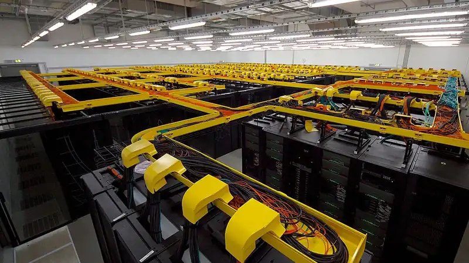

Google's $15B Visakhapatnam AI hub: air cooling, 120% water payback — and a jobs math locals aren't buying
Construction of Google's $15 billion 'gigawatt-scale' AI hub in Visakhapatnam has met local resistance over water, power and jobs. In an October 11 AFP interview, Google's APAC infrastructure chief Alexander Smith answered point by point — while activists demanded a statewide data-center moratorium.
Construction of Google's $15 billion AI hub in Visakhapatnam, India, is being met with resistance from residents who fear what a "gigawatt-scale" AI facility will do to the environment and their lives. The backlash, reported by AFP on October 11, has forced Google's data-center chief for Asia-Pacific to answer the three questions that now trail every hyperscale AI buildout: water, power, and jobs.
Alexander Smith, Google's head of infrastructure and energy for the Asia-Pacific region, told AFP the company takes the public's concerns seriously — and that its own water assessment "pointed to pressure on the local watershed," a finding he says shaped the cooling design "from the outset." The facility will use advanced air cooling rather than drawing water from an already-stressed region. Google also says it will replenish 120% of the freshwater it consumes for non-cooling needs by 2030.
The power question
Data-center critics everywhere point at the same arithmetic: AI clusters add demand to grids still heavily reliant on fossil fuels, and they often arrive in places where electricity is already tight. Smith's answer is a line in the sand: Google's environmental assessments — covering grid stability, power supply, water risk, ecology and acoustics — are conducted 12 to 24 months before a project begins, and "if there is insufficient power in a location, or if operating a data center would mean taking power away from a community, Google will either find ways to develop more power, or it will not build there."
Google also says it fully funds the required power infrastructure upgrades and is planning clean-energy projects in Visakhapatnam "built above and beyond what regulations require." The company does not disclose site-level capacity figures.
The jobs question
This is where the argument gets hardest for Google. Data-center opponents say the benefits of vast warehouse-like sites rarely trickle down to local residents — a handful of specialist jobs in exchange for industrial-scale land, water and power footprints. One farmer was paid more than $82,000 for her two-acre plot, a transaction that reads as prosperity from one side and displacement from the other.
Smith's counter is economics: a Google development of this kind is projected to generate about $688 million in local economic activity every year. For every job inside a Google data center, he says, nine additional jobs are supported in the surrounding community. Over a typical three-to-five-year construction period, an average build employs around 4,200 construction workers a year, and each facility is designed to operate for at least 20 years, sustaining "hundreds of specialist on-site roles" once live. The Visakhapatnam hub — billed as Google's biggest AI hub outside the United States — is set to become operational in 2028.
Why Visakhapatnam

Google chose the port city on India's southeast coast — construction at the Tarluvada site began in April 2026 with partners AdaniConneX and Nxtra by Airtel — because, Smith said, it is "one of the few places" where proximity to customers and users, access to talent, clean-energy potential and local partnerships come together. The coastline matters too: undersea cables can link Visakhapatnam to South Africa and Australia, "positioning Andhra Pradesh as India's third major subsea hub."
That pitch hasn't calmed the debate. Activists are demanding a moratorium on new data centers across Andhra Pradesh until there is more evidence of their environmental and community impact — and Google is fighting the same battle on a second front: a Finnish authority recently ordered work to halt on two Google data-center sites pending mandatory environmental assessments.
What this means
Smith called the project "a multi-decade commitment" carrying "an obligation to be a good neighbor" — "the watershed, the grid and the communities around our facilities must be better off for our being here." That is now the standard script for hyperscale AI infrastructure. The Visakhapatnam fight is testing whether the script is enough: air cooling and replenishment pledges address the physics, the $688 million figure addresses the politics, but neither resolves the core tension — a 20-year industrial bet in a region whose residents want proof, not projections, that the trade was fair.